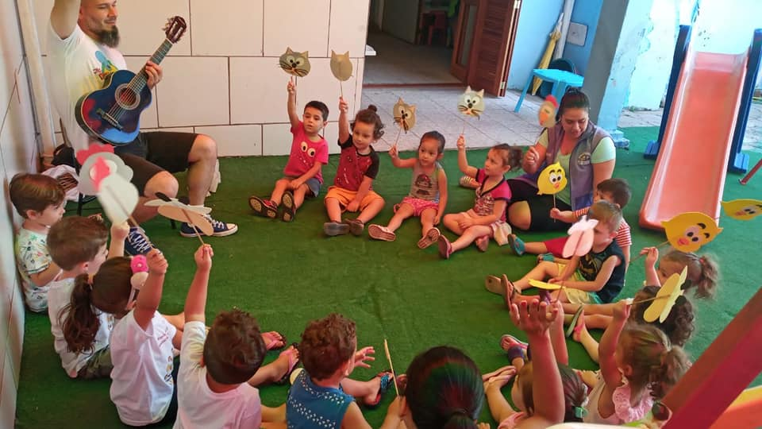
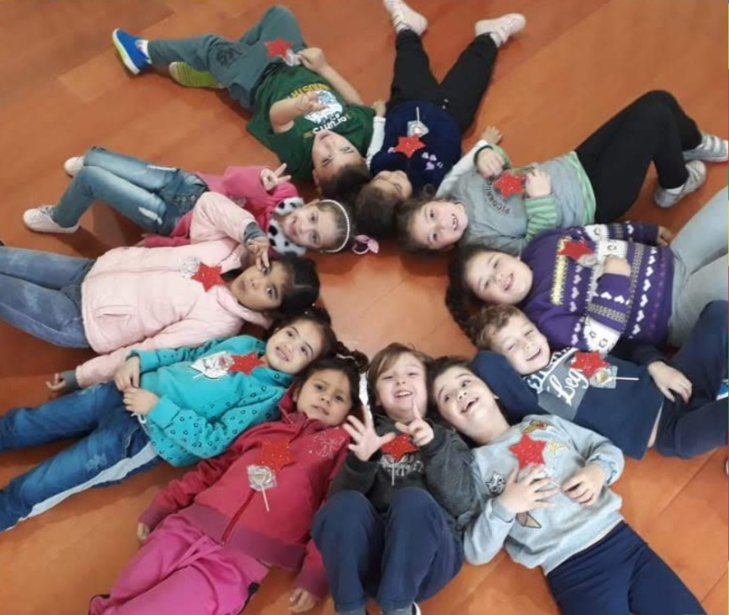
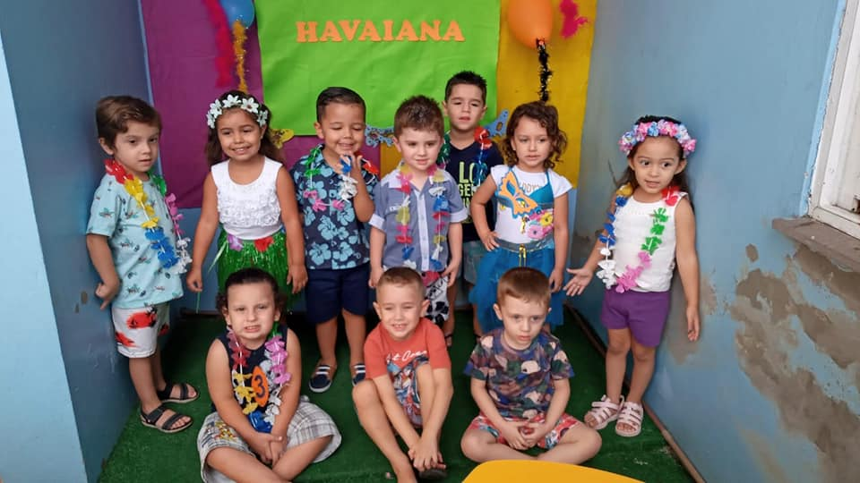

Dia de Cantar
Temos ótimos momentos de cantoria, apreendendo músicas e estimulando nossa criatividade. Nos divertimos muito cantando juntos.

Atividades Integrativas
Nossos Picorruchos se divertem muito em conjunto, buscando a integração total e respeito com nossos amiguinhos.

Festa Temática
Temos festinhas temáticas super divertidas para nossos Picorruchos brincarem à vontade. O tema da vez foi "Havaiana".